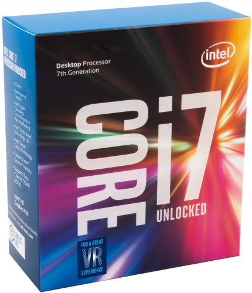
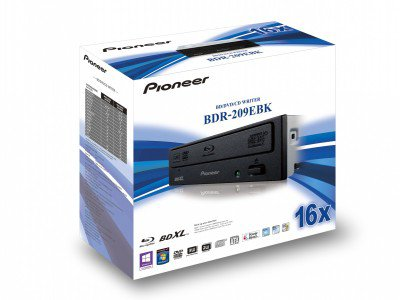
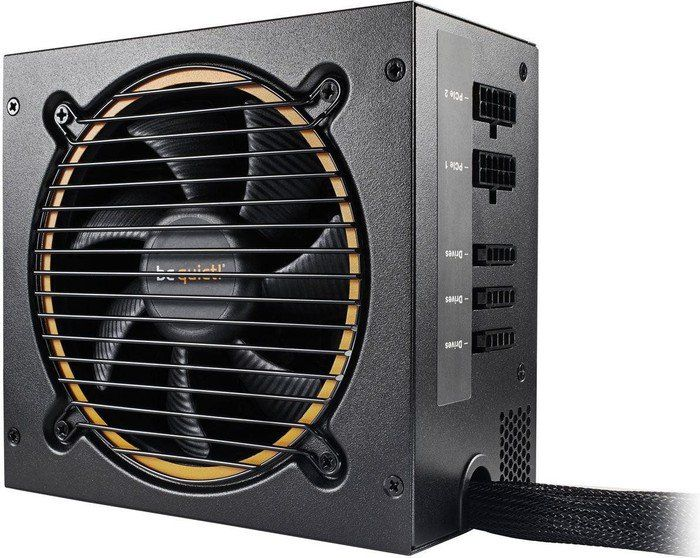

a)Płyta główna

Płyta główna (ang. motherboard, mainboard) – obwód drukowany urządzenia elektronicznego, na którym montuje się najważniejsze elementy, umożliwiając komunikację wszystkim pozostałym komponentom i modułom.[1]
W komputerze na płycie głównej znajdują się: procesory, pamięć operacyjna lub gniazda do zainstalowania tych urządzeń oraz gniazda do zainstalowania dodatkowych płyt zwanych kartami rozszerzającymi (np. PCI), oraz gniazda do urządzeń składujących (dyski twarde, napędy optyczne itp.), złącze klawiatury i zasilacza.
"https://pl.wikipedia.org/wiki/P%C5%82yta_g%C5%82%C3%B3wna"
-
Podstawowe cechy:
-Chipset: Intel Z170
-Częstotliwości pracy pamięci [MHz]: 2133, 3200, 2600, 2400, 2800, 3000
-Gniazda pamięci: DDR4
-Gniazdo procesora: Socket 1151
-Panel tylny: 1x PS/2 (klawiatura/mysz), 2x USB 2.0, 1x D-Sub (VGA), 6x wyjście audio, 4x USB 3.1 gen 1, 1x RJ-45, 1x DVI-D, 1x DisplayPort
b)Procesor

Procesor, CPU (ang. central processing unit), GPU (ang. graphics processing unit) – sekwencyjne urządzenie cyfrowe, które pobiera dane z pamięci, interpretuje je i wykonuje jako rozkazy. Wykonuje on ciąg prostych operacji wybranych ze zbioru operacji podstawowych określonych zazwyczaj przez producenta procesora jako lista rozkazów procesora.
"https://pl.wikipedia.org/wiki/Procesor"
-
Podstawowe cechy:
-Liczba rdzeni: 4
-Linia: Core i7
-Odblokowany mnożnik: tak
-Typ gniazda: Socket 1151
-Załączone chłodzenie: Nie
-Częstotliwość taktowania procesora [GHz]: 4.2
-TDP [W]: 91
c)Karta graficzna

Karta graficzna – karta rozszerzeń komputera odpowiedzialna za renderowanie grafiki i jej konwersję na sygnał zrozumiały dla wyświetlacza
"https://pl.wikipedia.org/wiki/Karta_graficzna"
-
Podstawowe cechy:
-DisplayPort: 2x DisplayPort
-Dodatkowe: Nie
-DVI: 1x DVI-D
-HDMI: 2x HDMI
-Ilość pamięci RAM: 8 GB
d)Karta dźwiękowa

Karta dźwiękowa (ang. sound card, audio card) – komputerowa karta rozszerzeń, umożliwiająca rejestrację, przetwarzanie i odtwarzanie dźwięku. Poprawnym jest też równie często stosowany termin karta muzyczna.
"https://pl.wikipedia.org/wiki/Karta_d%C5%BAwi%C4%99kowa"
-
Podstawowe cechy:
-Interfejs: USB
-Rodzaj: Zewnętrzna
-System dźwięku: 2.0
e)Napędy CD, Dvd

Napęd DVD – napęd przystosowany do odtwarzania i ewentualnie nagrywania płyt w formacie DVD.
"https://pl.wikipedia.org/wiki/Nap%C4%99d_DVD"
Napęd optyczny (ang. Optical Disc Drive, ODD) – urządzenie, które za pomocą wiązki lasera odczytuje lub zapisuje dane na tzw. nośnikach optycznych.
"https://pl.wikipedia.org/wiki/Nap%C4%99d_optyczny"
-
Podstawowe cechy:
-Interfejs: SATA
-Kolor: Czarny
-Typ napędu: DVD, CD, Blu-ray
f)Zasilacz

Zasilacz – urządzenie służące do dopasowania dostępnego napięcia do wymagań zasilanego urządzenia.
"https://pl.wikipedia.org/wiki/Zasilacz"
-
Podstawowe cechy:
-Certyfikat sprawności: 80 Plus Silver
-Moc [W]: 600
-Modularne okablowanie: Tak
-Układ PFC: Aktywny
-Zabezpieczenia: OTP, UVP, OPP, OCP, OVP, SCP